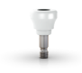
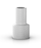
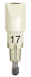

Buscando uma performance estética excepcional, o
Zi oferece, desde o próprio material, a cerâmica,
até o portfólio abrangente, um resultado estético
natural
Excelente desempenho estético
Com o objetivo de alcançar um desempenho
estético de excelência, o Sistema de Implantes
Cerâmicos da Neodent promove um resultado
estético natural, graças a cor e translucência
do material cerâmico em comparação com metais
Um portfólio para obter resultados estéticos naturais
Além de possibilitar o protocolo convencional ou
imediato, tanto com fluxo de trabalho convencional
ou digital, o portfólio protético de cerâmica
proporciona uma recuperação com uma aparência
natural
Cicatrizador
Desenvolvido em cerâmica, com um perfil de emergência
consistente para corresponder o formato externo da Base Zi

Fluxo de trabalho convencional
O cilindro calcinável é desenvolvido para entregar uma
restauração protética com enceramento em um fluxo de
trabalho convencional

Fluxo de trabalho digital
O Scanbody permite acesso ao fluxo de trabalho de
restauração digital no nível do implante. Esta solução é
compatível com os principais softwares de CAD no mercado

Dr. FEDERICO MANDELLI, Italia
‘‘Zi é um sistema de implante cerâmico que posso usar com
qualquer protocolo de carga imediata. Assim posso manter meus
protocolos iguais, para titânio ou cerâmica, oferecendo o
mesmo tratamento para qualquer caso.’’